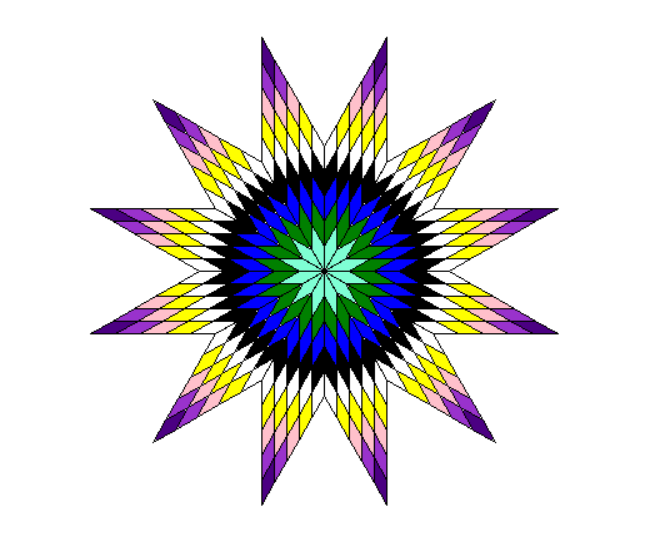
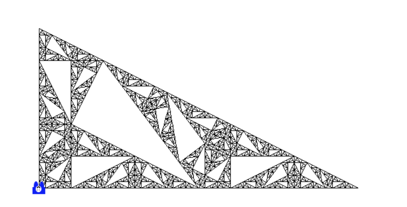

A Középiskolai Algoritmusokra Rávezető Edukációs Szoftver másnéven
a Karesz egy taunlmányi program aminek a legrégebbi verziója
amivel dolgoztunk az OOPkaresz egy kis kék karakter aki vagy éppen
kavicsokat pakol le vagy rajzolgat itt látható az egyik legalapabb
ábvra amit csináltunk vele
LogoKaresz
Emellett a LogoKaresszal dolgoztunk ez az imagine logonak egy
újraírása c#-ban amihez c#-ban kell írni az utasításokat, ez aszt
tesz lehetővé hogy komplikáltam "algorimtikusabb" feladatokat és
ábrákat csináljunk


Nehezebb feladatok LogoKareszban
Itt még be szeretném mutatni az egyik kedvenc feladatomat amit a
LogoKaresszal csináltam. Ez a Magasságtételfraktál. Ez volt az
utolsó Fraktálos feladat amit csináltam és ezért nagyon érezhettem
rajta az hogy mennyit fejlődtem az év alatt.
Extra:
Viccből megkértem egy kedves osztáltársamat hogy csináljon nekem
egy tumblr-sexyman kareszt és itt látható a végeredménye